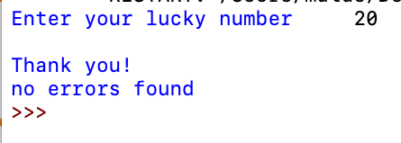

1) Kaip apriboti įvesties diapazoną nuo -100 iki 100
2) Mes naudojome ciklą „Python“, kad užtikrintume, jog jei nurodytas skaičius yra mažesnis nei –100, mes sukelsime klaidą, jei skaičius bus didesnis nei 100, mes taip pat padarysime klaidą, tai padarėme atlikdami ciklą ir informuoti naudotoją, kad skaičius turi būti ne didesnis kaip 100 ir ne mažesnis kaip -100.
3) Šie kodekso vaizdai prieš jį paleidžiant:
4) Kodo vaizdai po jo paleidimo (išvesties):
5) Paaiškinimas:
Pirmame paveikslėlyje galite pamatyti, kaip įvesties skaičiai yra nuo -100 iki 100, todėl klaida nekyla.
Antrajame paveikslėlyje klaida iškelta, nes skaičiai yra didesni nei 100, todėl klaida iškeliama.
1) Def funkcijos naudojimas pagrindiniams matematiniams skaičiavimams atlikti
2) Sukurta pirmoji ir antroji skaičių įvestys ir deklaruoti sumos, būtinybės, laiko ir skirtumų kintamieji, kad būtų grąžinta vertė, t. y. apskaičiuoti ir rasti šių dviejų skaičių sumą.
3) Šie kodekso vaizdai prieš jį paleidžiant:
4) Kodo vaizdai po jo paleidimo (išvesties):
5) Paaiškinimas:
Kode kiekvieną matematikos skaičiavimą apibrėžia kintamasis, o kai tas kintamasis spausdinamas, jis apskaičiuoja tuos du skaičius ir spausdina antrame paveikslėlyje parodytą rezultatą.
1) Kokios yra „Python“ išimtys? Klaidų sprendimas.
2) Sukurta keletas išimčių, kai iškyla tam tikrų klaidų, pvz., „ValueError“, „NameError“. Išspausdintas pranešimas išimties metu.
3) Šie kodekso vaizdai prieš jį paleidžiant:
4) Kodo vaizdai po jo paleidimo (išvesties):

5) Paaiškinimas:
Pirma, nėra klaidos ir skaičiai atspausdinti sėkmingai. Antrame paveikslėlyje parodyta, kaip nulinis skaičius neleidžiamas ir jis sukėlė klaidą. Ir trečias vaizdas rodo, kaip x nėra reikšmė, ir jis taip pat iškėlė klaidą, šį kartą - vertės klaidą.
1) Kas yra „Python“ duomenų struktūros? Tokie kaip Tuples, žodynai, sąrašai, rinkiniai.
2) Sukurti skaičių rinkiniai, žodynai, atspindintys kintamąjį su reikšmėmis. Rinkiniai, vaizduojami skirtingo tipo skliausteliuose.
3) Šie kodekso vaizdai prieš jį paleidžiant:
4) Kodo vaizdai po jo paleidimo (išvesties):
5) Paaiškinimas:
Pirmiausia turime žodyną, vaizduojamą garbanotais skliaustais. Ir raktus ir vertybes. Raktai yra kintamasis, o vertė - kaip atsakymas į tą kintamąjį. Tada „Tuples“ vaizduojame apskritimais, įprastais skliausteliais. Sąrašas pateikiamas laužtiniais skliaustuose. Visuose vaizduose galite pamatyti, kaip rūšiavimo metodas gali sutvarkyti mūsų duomenis laužtiniuose skliaustuose, ir tai dažniausiai yra sąrašas, kurį reikia tvarkyti.